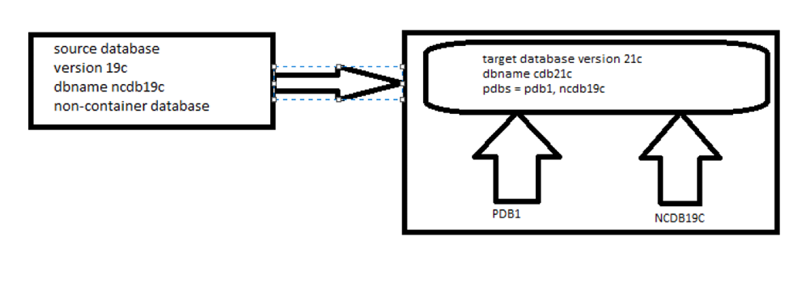

In this post we upgrade a 19c non-container database (ncdb19c) to Oracle 21c and, in the same run, plug it into an existing 21c container database (cdb21c) as a new PDB. AutoUpgrade does both jobs — the upgrade and the non-CDB-to-PDB conversion — from one config file.

ncdb19c is already running on 19c./u01/app/oracle/product/21c/dbhome_1).cdb21c has already been created in the 21c home. It's the target the non-CDB will be plugged into.target_home at the new home and set target_version to match.Download the latest autoupgrade.jar from MOS note 2485457.1 and replace the copy in the 21c home. If you don't have MOS access, skip this step and use the version that ships with the home.
cd /u01/app/oracle/product/21c/dbhome_1/rdbms/admin
mv autoupgrade.jar autoupgrade.jar_25052024
mv /nfsshare/oracle/soft/autoupgrade.jar .Generate a sample config file:
/u01/app/oracle/product/21c/dbhome_1/jdk/bin/java -jar \
/u01/app/oracle/product/21c/dbhome_1/rdbms/admin/autoupgrade.jar \
-create_sample_file config /nfsshare/oracle/pre_upgrade/config.txt full
Created sample configuration file /nfsshare/oracle/pre_upgrade/config.txtEdit the entries you need and save the result as /nfsshare/oracle/upgrade/ncdb19c.cfg, the file used in the next steps:
global.autoupg_log_dir=/u01/app/oracle/cfgtoollogs/autoupgrade
upg1.log_dir=/nfsshare/oracle/upgrade/ncdb19c
upg1.sid=ncdb19c
upg1.source_home=/u01/app/oracle/product/19.0.0/dbhome_1
upg1.target_home=/u01/app/oracle/product/21c/dbhome_1
upg1.target_cdb=cdb21c
upg1.target_pdb_name=ncdb19c
upg1.start_time=NOW
upg1.upgrade_node=ol7_19_vagrant.scslabs.com
#upg1.run_utlrp=yes
upg1.timezone_upg=yes
upg1.target_version=21| Parameter | What it does |
|---|---|
target_cdb | The 21c CDB to plug the upgraded database into. Setting it is what triggers the non-CDB-to-PDB conversion. |
target_pdb_name | The name the new PDB gets in the CDB. |
upgrade_node | The host to run on. Default is localhost. |
timezone_upg | Also upgrades the time zone file. |
start_time | NOW starts the job straight away. |
upg1.target_pdb_copy_option=file_name_convert=NONE (OMF) or a file_name_convert pair. That copies the datafiles, so you need the extra space.Analyze mode only checks the database. It changes nothing and needs no downtime.
/u01/app/oracle/product/21c/dbhome_1/jdk/bin/java -jar \
/u01/app/oracle/product/21c/dbhome_1/rdbms/admin/autoupgrade.jar \
-config /nfsshare/oracle/upgrade/ncdb19c.cfg -mode analyzeAutoUpgrade 24.4.240426 launched with default internal options
Processing config file ...
+--------------------------------+
| Starting AutoUpgrade execution |
+--------------------------------+
1 Non-CDB(s) will be analyzed
Type 'help' to list console commands
upg> lsj
+----+-------+---------+---------+-------+----------+-------+----------------------------+
|Job#|DB_NAME| STAGE|OPERATION| STATUS|START_TIME|UPDATED| MESSAGE|
+----+-------+---------+---------+-------+----------+-------+----------------------------+
| 100|ncdb19c|PRECHECKS|EXECUTING|RUNNING| 22:35:32|25s ago|Loading database information|
+----+-------+---------+---------+-------+----------+-------+----------------------------+
Total jobs 1
upg> Job 100 completed
------------------- Final Summary --------------------
Number of databases [ 1 ]
Jobs finished [1]
Jobs failed [0]
Please check the summary report at:
/u01/app/oracle/cfgtoollogs/autoupgrade/cfgtoollogs/upgrade/auto/status/status.html
/u01/app/oracle/cfgtoollogs/autoupgrade/cfgtoollogs/upgrade/auto/status/status.logReview the summary report and the pre-check logs, and fix anything flagged as an error, before you go on.
/u01/app/oracle/product/21c/dbhome_1/jdk/bin/java -jar \
/u01/app/oracle/product/21c/dbhome_1/rdbms/admin/autoupgrade.jar \
-config /nfsshare/oracle/upgrade/ncdb19c.cfg -mode deployUse lsj at the upg> prompt to follow the job through its stages:
1 Non-CDB(s) will be processed
Type 'help' to list console commands
upg> lsj
+----+-------+-----+---------+-------+----------+-------+-------+
|Job#|DB_NAME|STAGE|OPERATION| STATUS|START_TIME|UPDATED|MESSAGE|
+----+-------+-----+---------+-------+----------+-------+-------+
| 102|ncdb19c| GRP|EXECUTING|RUNNING| 23:10:59| 1s ago| |
+----+-------+-----+---------+-------+----------+-------+-------+
upg> lsj
+----+-------+---------+---------+-------+----------+----------+-------+
|Job#|DB_NAME| STAGE|OPERATION| STATUS|START_TIME| UPDATED|MESSAGE|
+----+-------+---------+---------+-------+----------+----------+-------+
| 102|ncdb19c|PREFIXUPS|EXECUTING|RUNNING| 23:10:59|!!195s ago| |
+----+-------+---------+---------+-------+----------+----------+-------+
upg> lsj
+----+-------+---------+---------+-------+----------+-------+------------------+
|Job#|DB_NAME| STAGE|OPERATION| STATUS|START_TIME|UPDATED| MESSAGE|
+----+-------+---------+---------+-------+----------+-------+------------------+
| 102|ncdb19c|DBUPGRADE|EXECUTING|RUNNING| 23:10:59|66s ago|0%Upgraded NCDB19C|
+----+-------+---------+---------+-------+----------+-------+------------------+status -job 102 shows the details, log locations and time spent in each stage:
upg> status -job 102
Details
Job No 102
Oracle SID ncdb19c
Start Time 24/05/24 23:10:59
Elapsed (min): 72
End time: N/A
Logfiles
Logs Base: /nfsshare/oracle/upgrade/ncdb19c/ncdb19c
Job logs: /nfsshare/oracle/upgrade/ncdb19c/ncdb19c/102
Stage logs: /nfsshare/oracle/upgrade/ncdb19c/ncdb19c/102/postfixups
TimeZone: /nfsshare/oracle/upgrade/ncdb19c/ncdb19c/temp
Stages
SETUP <1 min
GRP <1 min
PREUPGRADE <1 min
PRECHECKS 1 min
PREFIXUPS 5 min
DRAIN 2 min
DBUPGRADE 48 min
DISPATCH <1 min
NONCDBTOPDB 12 min
POSTCHECKS <1 min
POSTFIXUPS ~2 min (RUNNING)
POSTUPGRADE
SYSUPDATES
Stage-Progress Per Container
+--------+----------+
|Database|POSTFIXUPS|
+--------+----------+
| NCDB19C| 75 % |
+--------+----------+
upg> Job 102 completed
------------------- Final Summary --------------------
Number of databases [ 1 ]
Jobs finished [1]
Jobs failed [0]
Jobs restored [0]
Jobs pending [0]In this lab the whole run took about 72 minutes. The upgrade itself took most of it, and the conversion to a PDB took another 12 minutes:
| Stage | Time | |
|---|---|---|
| PREFIXUPS | 5 min | |
| DRAIN | 2 min | |
| DBUPGRADE | 48 min | |
| NONCDBTOPDB | 12 min | |
| POSTFIXUPS | ~2 min |
Connect to the 21c CDB as SYSDBA (ss here is a shell alias for sqlplus / as sysdba) and check the PDBs:
SQL*Plus: Release 21.0.0.0.0 - Production on Sat May 25 00:26:56 2024
Version 21.3.0.0.0
Connected to:
Oracle Database 21c Enterprise Edition Release 21.0.0.0.0 - Production
SQL> show pdbs
CON_ID CON_NAME OPEN MODE RESTRICTED
---------- ------------------------------ ---------- ----------
2 PDB$SEED READ ONLY NO
3 PDB1 READ WRITE NO
4 NCDB19C READ WRITE NONCDB19C is now a PDB in cdb21c, open READ WRITE and not restricted. A few more checks are worth running inside the PDB:
ALTER SESSION SET CONTAINER = NCDB19C;
-- components should all be VALID
SELECT comp_id, version, status FROM dba_registry;
-- no invalid objects left behind
SELECT COUNT(*) FROM dba_objects WHERE status = 'INVALID';
-- any plug-in issues still open
SELECT type, message FROM pdb_plug_in_violations
WHERE name = 'NCDB19C' AND status <> 'RESOLVED';
-- keep the PDB open after a CDB restart
ALTER PLUGGABLE DATABASE NCDB19C SAVE STATE;tnsnames.ora entries and application connection strings to use the PDB's service name (ncdb19c) on the 21c listener. Once you're happy with the result, back up the CDB.Related: Streamlining Oracle Database Patching with AutoUpgrade.jar · Upgrading an Oracle 12.2 PDB to 19c